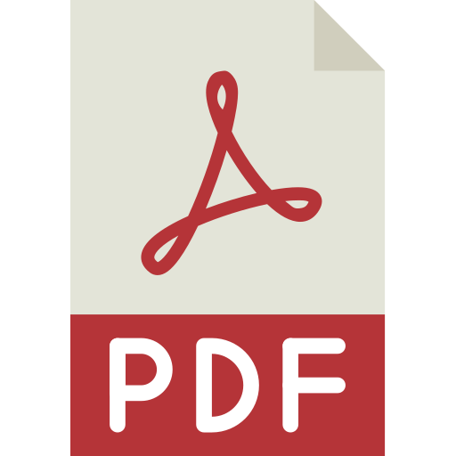

Ph.D. Candidate
Ph.D. CandidateRecent Talks
Co-Design and Coordination of Future Mobility SystemsIEEE ITSC 2022 Workshop on Co-Design and Coordination of Future Mobility Systems
Co-Design of Embodied Intelligence: A Structured Approach 
IEEE/RSJ International Conference on Intelligent Robots and Systems (IROS), October 2021
Game Theory to Study Interactions Between Mobility Stakeholders
IEEE 24th International Conference on Intelligent Transportation Systems Conference (ITSC), September 2021
Best Paper Award (1st Place)
Limits and Colimits in a Category of Lenses (jointly with Vincent Wang)
4th Annual International Applied Category Theory Conference (awarded distinguished keynote talk), July 2021
Co-Design of Autonomous Systems: From Hardware Selection to Control Synthesis
European Control Conference 2021, July 2021
Categories for Co-Design (jointly with Dr. Andrea Censi)
1st IEEE ICRA 2021 Workshop on Compositional Robotics: Mathematics and Tools, May 2021